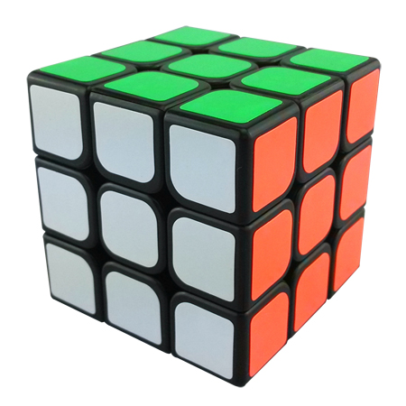
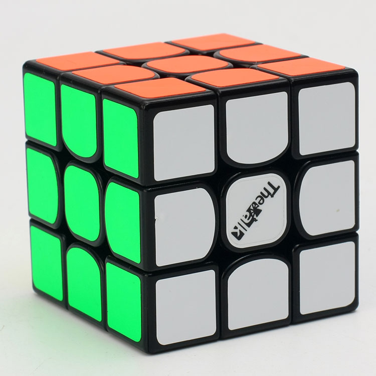

The original Rubik’s cube was not meant to be solved quickly. Modern speedcubes are much more fitted for speed. They have different mechanisms from the original Rubik’s cube. Many people in the speedcubing community bash on the Rubik's branded cube because of how slow it is, even though it is the origin of the 3x3 puzzle.
Original Rubik's cube mechanism | Modern speedcube (Gans Air 365S) mechanism |
Here are some examples of well-known* speedcubes:
| Visual | Name | Release Date | Information |
|---|---|---|---|
| DaYan Zhanchi | July 2011 |
|
|
| YJ Moyu WeiLong | June 2013 |
|
|
| YJ Moyu AoLong | July 2014 |
|
|
|  | YJ GuanLong | October 2014 |
|
| QiYi Sail | September 2015 |
|
|
| Gans 365 Air | August 2016 |
|
|
|  | QiYi Valk 3 | August 2016 |
|
*Well-known by speedcubers
*A term used by speedcubers for the cube model they use most often